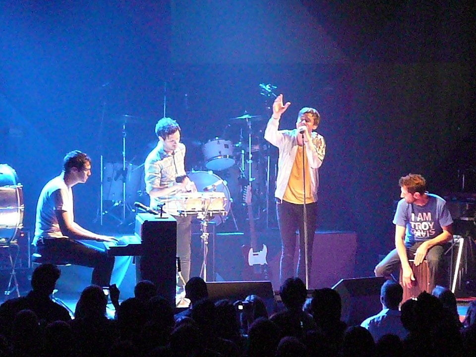
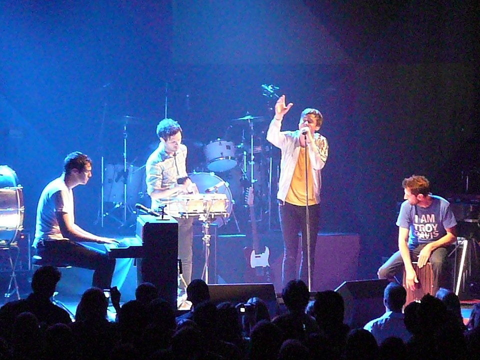
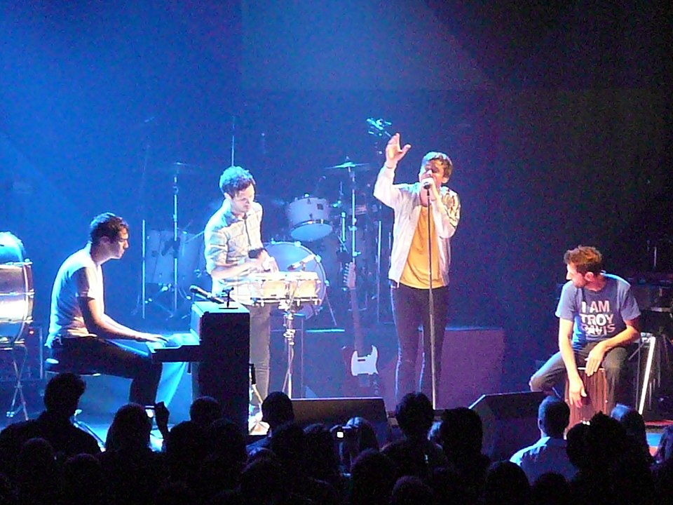

.jpeg)

 

🎵 𝄟🎶🎼💓🎸𝅬𝆕𝇍𝇚

Keane's story is an emotional one, with a twist now and then. Tim Rice-Oxley (piano), Tom Chaplin (vocals, guitar), Richard Hughes (drums) and Jesse Quin (bass) know how to make sparks fly. After a long hiatus and years of uncertainty, they are back with Cause and Effect, an album that will hopefully be the first of a second series. A second phase in the band's history, which will undoubtedly be less dense, more spontaneous and adapted to their life as fathers. No more albums and tours, but listening to each other and enjoying, without knowing what will happen next. One thing is certain, Keane has not finished surprising us.
The band's story began in 1997 with a group of friends in Battle, southern England. After a difficult first few years, the tide turned in 2002 when they were spotted by independent label Fierce Panda, who signed them to their first contract. The first single, "Everybody's changing", was released, followed by "This is the last time", to positive reviews. This led to more radio play and concerts, and the band was signed to Universal's Island label. 2004 was the year of consecration for Keane, with the release of the album "Hopes and Fears", which brought them success in the UK and around the world.
Studio Albums and Years
My Favorite Songs
| Year | Title | Type | Song |
|---|---|---|---|
| 2004 | Raise Your Voice | Film | "We Might as Well Be Strangers" |
| 2006 | The Lake House | Film trailer | "Somewhere Only We Know" |
| 2007 | Keinohrhasen | Film | "Everybody's Changing" |
| 2008 | Again and Again | Film | "Again and Again we" |
| 2010 | Mission London | Film | "Is It Any Wonder?" |
| 2016 | A Monster Calls | Film | "Tear Up This Town" |
Members and Instruments : Nothing Selected
Developed by Urvisha Patel